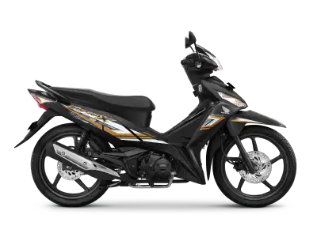
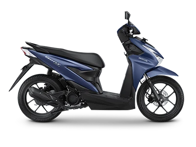

Dasar-Dasar Berkendara Motor
- Memahami Kendaraan Anda
- Komponen Utama Motor
- Mesin: Mengubah bahan bakar menjadi tenaga.
- Transmisi: Manual atau otomatis; manual memerlukan penggantian gigi manual, otomatis
mengatur gigi secara otomatis.
- Sistem Rem dan Suspensi: Rem untuk menghentikan motor, suspensi untuk menyerap guncangan.
- Perawatan Rutin
- Memeriksa Oli Mesin: Penting untuk pelumasan dan kesehatan mesin.
- Tekanan Ban: Memastikan keselamatan dan efisiensi bahan bakar.
- Pemeriksaan Cairan: Coolant, minyak rem, dan oli transmisi.
- Posisi Berkendara yang Benar
- Pengaturan Posisi Duduk: Mengontrol motor dengan baik.
- Penggunaan Helm dan Pelindung: Helm dan pelindung tubuh harus dikenakan dengan benar.
Berkendara Motor Manual
- Teknik Mengemudi Manual
- Mengganti Gigi: Menggunakan kopling dan tuas transmisi.
- Teknik Start dan Stop: Koordinasi antara kopling, gas, dan rem untuk kelancaran berkendara.
- Menghindari Kesalahan Umum
- Menghindari Stalling: Latihan untuk mencegah mesin mati.
- Menangani Over-revving: Menghindari RPM tinggi yang berlebihan.

Berkendara Motor Otomatis (Matic)
- Cara Menggunakan Transmisi Otomatis
- Mode Transmisi: "D" (Drive), "N" (Neutral), dan mode tambahan seperti "S" (Sport) jika ada.
- Teknik Mengemudi: Fokus pada akselerasi dan pengereman tanpa mengganti gigi secara manual.
- Memahami Mode Berkendara
- Mode Berkendara Khusus: Mode untuk kondisi jalan yang berbeda untuk pengalaman berkendara yang lebih baik.

Keselamatan Berkendara
- Teknik Mengemudi di Kondisi Cuaca Buruk
- Berkendara di Hujan: Jaga jarak aman dan gunakan pakaian pelindung.
- Berkendara di Salju dan Kabut: Kurangi kecepatan dan berhati-hati.
- Prosedur Darurat
- Menangani Kecelakaan: Tetap tenang, periksa kondisi, laporkan ke pihak berwenang.
- Situasi Darurat: Tindakan cepat untuk ban bocor atau kehabisan bahan bakar.